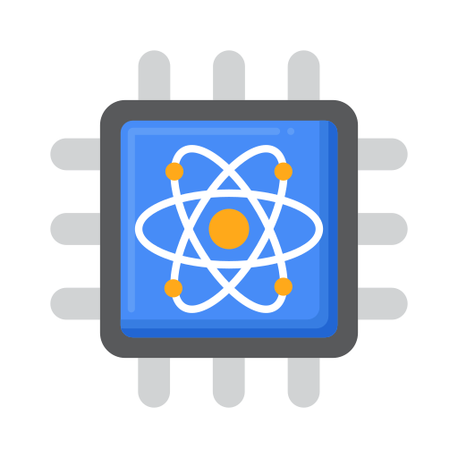

Entre a vida e a morte, a certeza e o caos, existe um mundo onde tudo é possível – bem-vindo à era da Computação Quântica.
Explore esse universo onde bits não são só 0 ou 1, e as decisões moldam o presente e o futuro ao mesmo tempo e como partículas podem estar em 2 lugares ao mesmo tempo.
Está pronto para decifrar o paradoxo e descobrir o seu papel na nova revolução tecnológica?
